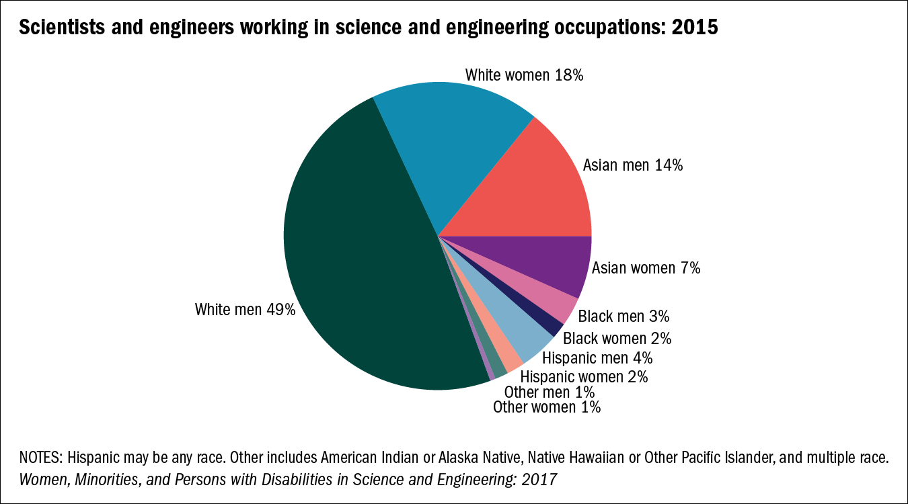

The Issue on Diversity in STEM
Published by: Kellie Aveneth I. Castro
Published on October 26, 2020
")
The underrepresentation of the community of black, indigenous, and people of color (BIPOC) is a prevalent issue in society today, especially within the field of STEM. The identities of individuals, such as race and ethnicity, should never be a barrier for them to attain great and equal opportunities as compared to the people they work with. However, the lack of diversity in STEM proves otherwise. According to a study conducted by the National Science Foundation during 2015, 67% of scientists and engineers in the U.S. are white, which by some means outnumbered the remaining 34%, who are Black, Asian, and Hispanic. To address this issue, possible solutions should be made to promote diversity and to end discrimination in such areas in society.

As tracked by the Nature Index, the United States has been the most prolific publisher of numerous scientific papers as of 2018. The United States has been populated with a vast number of scientists from all around the world, given that the country is one of the hubs of high-quality science and has prestigious institutions namely Harvard University and Stanford University. But with this vast number, diversity has never found its right path in this road. For this reason, many people, particularly immigrants, have been the subject of widespread racism. Since white people dominate and are superior in STEM, people who are different in terms of race, ethnicity, or nationality are being dragged away from their opportunity of being successful and having a contribution to the world of science. For this unfortunate event, these immigrants should consider returning to their respective countries, to not be at risk of the dangers of discrimination. Without a doubt, returning to one’s homeland would never be a problem, as it could guarantee more acceptance and recognition. Anyone, especially these immigrants, still have the opportunity to excel in his or her specialty in their own country.
Another possible way of addressing the issue of discrimination is to hire, rent, or even adopt a minority. One of the possible solutions for ending institutional inequality is to promote a work environment with racial diversity. Diversity in STEM workplaces can enhance research excellence, competitiveness, and facilitate a better exchange of perspectives and ideas. The concept of adopting a minority is simple. Its process is similar to adopting a child from an orphanage. A website called Rent-A-Minority offers a minority to hire for any occasion. It is a service that aims to promote a diverse environment of various ethnicities and nationalities. Allowing this concept to be applied in STEM can encourage cultural equity and let the BIPOC community to be recognized and to be given better opportunities in the academe.
In the field of STEM, racially or ethnically different people, as compared to white people, are without a doubt underrepresented. As this issue becomes more and more relevant as time goes by, it is never too late to resolve such a conflict. The identities of individuals, such as race and ethnicity, should never be a barrier for them to meet great and equal opportunities as compared to their white counterparts. Either returning to one’s country from the U.S.A. or adopting the concept of hiring a minority could potentially end the prevalent issue of discrimination and lack of diversity in STEM and society today.